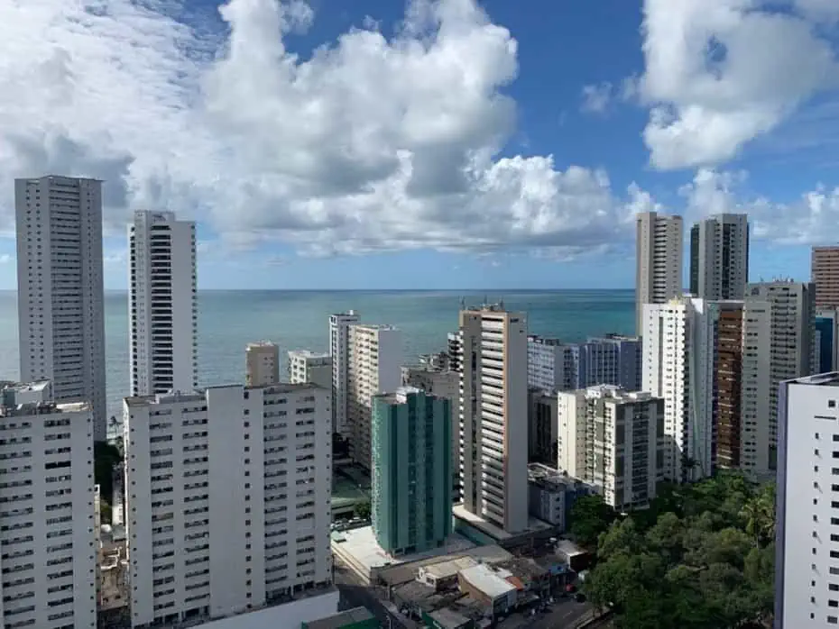

Comer, beber e ouvir música no Recife Antigo Vamos conhecer agora alguns lugares para dar uma boa petiscada, tomar uma bela gelada ou também ouvir uma boa música ao vivo. Fique ligado nas nossas dicas, e aproveite o que o Recife Antigo tem de melhor! Segue abaixo nossas recomendações: Jazz, rock, blue e pastel no Recife Antigo Burburinho: um dos bares mais famosos na região, o Burburinho é um dos lugares mais animados para curtir a noite do Recife, além de ter música boa, ambiente super boêmio. O local também é conhecido por servir pastéis de dar água na boca.
Praia de Boa Viagem, uma das maravilhas de Recife RECIFE O estado de Pernambuco é um dos favoritos dos turistas na hora de programarem viagens de férias. Recife, a capital pernambucana, possui diversas atrações e atividades a serem realizadas, mas uma delas é de longe a melhor. A Praia de Boa Viagem é a mais famosa de toda a cidade, até por ser um dos cartões postais da região. Ela tem uma ótima estrutura para o turista e ainda é bastante movimentada. Nesse post vamos falar sobre o que fazer, onde comer, onde ficar e também sobre alguns cuidados que devemos tomar com alguns tubarões que de vez em quando visitam a praia. A praia de Boa Viagem está próxima ao aeroporto internacional, o que permite uma parada rápida, mesmo que seja em uma breve conexão em Recife.